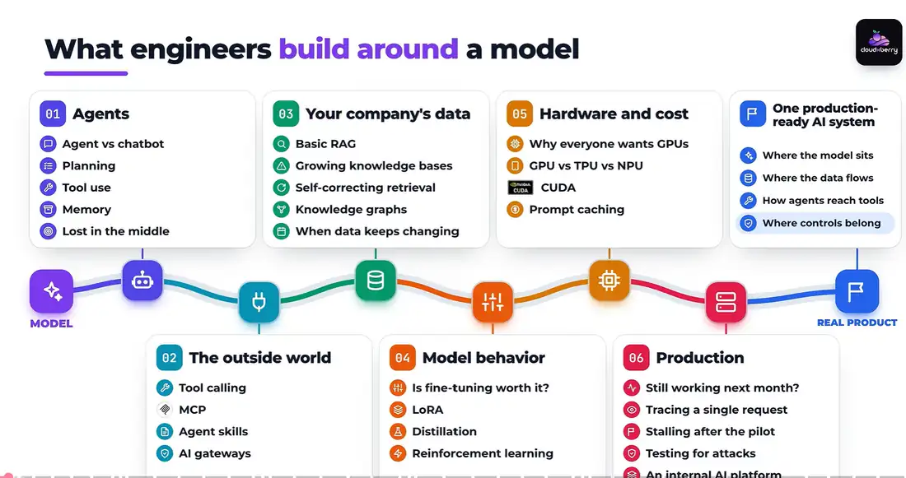

What engineers build around a model：從模型到真正的產品
影片的核心主張：讓模型回答問題是簡單的部分，難的是把它變成大家每天依賴的產品。下圖是影片的課程地圖，左邊是模型（MODEL），沿著 6 個模組往右，最後成為真正的產品（REAL PRODUCT）。

| 模組 | 英文標題 | 圖中子題（中譯） | 要解決的問題 |
|---|---|---|---|
| 01 | Agents | Agent vs 聊天機器人、規劃、工具使用、記憶、Lost in the Middle | 從「回答」變成「做事」 |
| 02 | The outside world | 工具呼叫、MCP、Agent Skills、AI 閘道 | Agent 如何安全地碰到真實系統 |
| 03 | Your company's data | 基本 RAG、知識庫變大、自我修正檢索、知識圖譜、資料持續變動 | 答案藏在公司文件裡時怎麼辦 |
| 04 | Model behavior | 微調值得嗎、LoRA、蒸餾、強化學習 | 模型行為從哪來、怎麼改 |
| 05 | Hardware and cost | 為何大家搶 GPU、GPU/TPU/NPU、CUDA、Prompt Caching | 跑在什麼上面、花多少錢 |
| 06 | Production | 下個月還能用嗎、追蹤單一請求、試點後停滯、攻擊測試、內部 AI 平台 | 如何知道它一直正常運作 |
| 終點 | One production-ready AI system | 模型放在哪、資料怎麼流、Agent 怎麼碰到工具、控制機制放在哪 | 把全部組成一個系統 |
同一張退款單，走完整門課
虛構網路商店 Cloud X Berry 的顧客寫信：「我買的果汁機送到時裂了，是節慶特價買的，還能退款嗎？」影片每遇到一道牆，就停下來講能跨過那道牆的概念。
- 聊天機器人只會回一段退款政策說明；Agent 會查訂單、查政策、發退款、寄信、關單。
- 模型碰不到付款系統 → 需要工具呼叫與控制迴圈；多個 App 都要用訂單系統 → MCP。
- 「特價品是否可退」寫在政策文件裡 → RAG；牽涉加拿大、合作品牌保固、會員資格 → 知識圖譜與 Agentic RAG。
- 客服要求「語氣像公司」「成本更低」「選顧客最喜歡的回覆」→ 微調／LoRA、蒸餾、強化學習。
- 尖峰時段變慢、帳單暴增 → GPU 推論機制、批次處理、Prompt Caching。
- 上線一個月後開始錯誤拒絕退款 → 追蹤、評估、紅隊演練、平台工程，最後找出是索引同步失敗讀到舊版政策。
Agents：從回答到做事
Agent 拿到目標後會自己完成任務：使用工具、看結果、再決定下一步。本模組拆解 Agent 的形狀。
| 時間 | 主題 | 重點 |
|---|---|---|
| 3:26 | 什麼是 Agent | 代理迴圈（Agentic Loop）：決定 → 行動 → 觀察 → 再決定；ReAct 結合推理與行動。人寫好步驟、模型只填空是 Workflow；模型自己選下一步才是 Agent，實務多介於兩者之間。 |
| 6:08 | 五大子系統 | 感知（Perception）、推理（Reasoning，含拆解與路由 Routing）、行動（Action，需驗證層與人工核准）、學習（執行期調整，例如反思 Reflection、儲存成技能，不是改權重）、溝通（交接給其他 Agent 或人）。在架構圖上會對應成：模型、工具、記憶、控制迴圈、權限。 |
| 9:40 | 單一 vs 多代理 | 單一 Agent 只有一個決策迴圈，易追蹤除錯；多代理由協調者分派、可平行處理、可加獨立檢查者。代價是更多模型呼叫、交接遺失脈絡、出錯難歸責。原則：先用一個，有明確理由再拆。 |
| 13:09 | Agent 記憶 | 模型在請求之間不會自動記得。四種記憶：短期（目前的上下文，像白板）、情節（Episodic，何時發生什麼，像工作日誌）、語意（Semantic，與時間無關的事實，可用向量庫或知識圖譜存）、程序（Procedural，做事的步驟）。記憶是「存了什麼」，上下文是「這次放進去什麼」。 |
| 16:53 | 上下文是預算 | Lost in the Middle：關鍵資訊放開頭或結尾效果較好、放中間容易被忽略，呈 U 型。對策：只放這一步需要的、核心指示釘在最前、最相關文件放頭尾、問題在結尾再說一次、寬搜後只留最好的幾筆、超長文件拆開處理。 |
判斷是否為 Agent 的三個問題
Agent 為何要「短繩」
Agent 忘記事情時查三件事
更大的上下文視窗不是解方
影片建議追問的問題
- 這個產品是會採取行動，還是只會寫文字？
- 多代理設計有明確理由嗎（平行、太大、需要獨立檢查）？
- 關鍵資訊在上下文中的位置在哪裡？
The outside world：從一個 Agent 到一個系統
模型本身碰不到付款系統。模型的決定與真實世界之間，必須有一層程式碼負責檢查、執行與記錄。
| 時間 | 主題 | 重點 |
|---|---|---|
| 22:47 | 工具呼叫 Tool Calling | 工具描述 = 名稱 + 說明 + 輸入格式（Schema）；模型只看得到描述，描述含糊就會選錯。模型產生結構化請求，控制迴圈檢查三件事：格式對不對、這個 Agent 有沒有權限、數值合不合理，才真正執行。超過金額上限就暫停、轉給主管核准。 |
| 22:47 | 失敗處理 | 付款逾時時：把錯誤濃縮成一句、計算重試次數、用冪等鍵（Idempotency Key）避免重複退款、重試幾次後轉人工。每一步都寫進追蹤（Trace）：呼叫哪個工具、輸入、結果、耗時、成本。工具越多不一定越好，描述會占上下文、也更容易選錯。 |
| 28:20 | MCP 模型上下文協定 | 2024 年底推出的開放標準，像貨櫃一樣統一形狀。Host（使用者用的 AI App）內有 MCP Client，連到 MCP Server（包住真實系統）。Server 提供三種東西：Tools（模型選用）、Resources（App 管理的資料）、Prompts（使用者挑的範本）。10 個 App × 10 個工具不必寫 100 段膠水程式。 |
| 28:20 | MCP 不等於安全 | MCP 處理連線與授權，但不知道業務規則（這個 Agent 能不能退這筆金額）。Server 只給最小權限、只連信任的 Server、控制迴圈照樣檢查；惡意 Server 的工具描述可能夾帶隱藏指令。 |
| 33:13 | MCP vs Agent Skills | 連太多工具會讓描述塞滿上下文（Context Rot）。Skill 是一個資料夾：主說明檔（短標頭 + 詳細步驟）＋範本或腳本。啟動時只讀標頭，遇到相符任務才載入全文，稱為漸進式揭露（Progressive Disclosure）。MCP 回答「怎麼碰到系統」，Skill 回答「這類任務該怎麼做」；硬性限制仍要寫在程式碼。 |
| 37:54 | 角色與邊界 | 每個 Agent 寫下四件事：一句話職責、不准做什麼、上下游是誰、步驟與固定規則。再加一份整個系統的地圖。權限要跟著角色走（最小權限原則），交接用結構化欄位，共享資料要有擁有者或鎖定機制。依工作與資料流切分，不要依人類職稱切分。 |
| 43:01 | AI 閘道 AI Gateway | 所有模型呼叫的共同入口。比 API Gateway 多了：以 Token 計費與預算、依部門追蹤花費、選模型與備援切換、內容與隱私檢查（例如遮罩卡號）、快取安全的重複回答、記錄每次呼叫的收據。本身是單點，需要備援容量。 |
模型提議，系統決定
一個退款失敗可能有四種原因
Prompt 要求 vs 系統強制
工具呼叫失敗時依序檢查
影片建議追問的問題
- 請求執行前由什麼檢查？在哪裡暫停交給人？Trace 存在哪？
- 每個 Agent 的權限與它的角色相符，還是只是提示詞寫了？
- 模型呼叫都經過同一個閘道嗎？身分、預算、內容在哪裡檢查？
Your company's data：讓 Agent 有所依據
退款規則寫在文件裡，而且會變。本模組說明 RAG 為何會悄悄失敗，以及各種改良方法分別解決什麼問題。
| 時間 | 主題 | 重點 |
|---|---|---|
| 50:00 | 基本 RAG 的六種失敗 | ①切塊把規則和例外切開（「特價品不退」與「除非送達時損壞」分在兩塊）②語意相近但答案錯（別國政策、去年活動）③精確詞找不到（產品代碼、活動名稱）④問題太模糊 ⑤塞太多內容（Top-20 讓關鍵句埋在中間）⑥舊版或缺漏的知識。模型都沒推理錯，錯在模型看到問題之前。 |
| 50:00 | 除錯順序 | 文件在索引裡嗎？是最新版嗎？切塊有保留規則與例外嗎？搜尋有找回來嗎、排第幾？有放進上下文嗎？最後才問模型有沒有用好。每次檢索都要記錄查詢、排序結果與實際放入的段落。 |
| 54:53 | RAG 變體四大家族 | ①混合檢索 Hybrid（語意 + 關鍵字，便宜、常預設開啟）②重新排序 Rerank（先撈幾十筆，再由較精細的模型評分；找不到的救不回來）③改善問題（改寫查詢、反問澄清、拆成子問題、HyDE 先寫假答案再去找）④檢查（CRAG 判斷檢索結果太弱就修正搜尋；Self-RAG 訓練模型自己決定何時檢索並反思）。另可加路由器把簡單問題走快速路徑。 |
| 1:00:03 | 知識圖譜三個名詞 | 用城市鐵路比喻：知識圖譜 Knowledge Graph 是地圖（節點、關係、屬性）；GraphRAG 是路線規劃（找到問題提到的實體，沿著連結收集相關事實；有些版本先分群並寫摘要，適合全域性問題）；圖譜工程 Graph Engineering 是測量隊（決定追蹤哪些實體與關係、抽取、實體對齊、維護一致性）。除錯從資料層 → 檢索層 → 決策層。 |
| 1:05:34 | Agentic RAG | 檢索從「固定步驟」變成 Agent 可選用的工具（查政策、查產品手冊、查圖譜、查訂單）。適合跨多來源的開放式問題，但成本與路徑難預測。對策：程式碼限制搜尋次數與預算、定義「完成」條件、工具描述清楚且結果精簡、保留 Trace、簡單問題仍走固定流程。 |
| 1:10:14 | 活的知識庫 | 避免「筆記墳場」：增量匯入（只處理有變動的檔案，表格與掃描檔另外處理）、版本與生效日期、真正的刪除（舊區塊要從索引移除並確認）、每份文件有擁有者與複審日期、來源可追溯（Provenance）、權限跟著文件走、共用詞彙表。可另建 LLM 維護的摘要層（LLM Wiki），但新頁面需人工審核；使用者回報的修正先進審核佇列。 |
不要先換模型
每個元件問三件事
圖譜適用時機
知識庫要像程式碼一樣照顧
影片建議追問的問題
- 正確答案是在檢索路徑的哪一步消失的？
- Agentic RAG 能用哪些搜尋工具？什麼條件會讓它停下？
- 這份政策的擁有者是誰？上次複審是什麼時候？
Model behavior：行為從哪裡來，怎麼改
客服團隊要求：語氣像公司、格式一致、成本更低、選顧客最喜歡的回覆。這些要求伸進了模型內部。
| 時間 | 主題 | 重點 |
|---|---|---|
| 1:17:56 | AI 的資料架構 | 兩年客服回覆不能直接拿來訓練：含舊政策、被糾正過的無禮語氣、重複工單、卡號地址、甚至和測試集重疊。資料管線：來源與授權 → 收集與品質檢查 → 清理（去重、去個資、過濾不良範例）→ 標註（標註者一致性）→ 切分訓練／驗證／測試（依時間或客戶切）→ 版本化與血緣（Lineage）。常見問題：資料洩漏、內容過時、分布偏斜、定義不一致、上線後漂移（Drift）。 |
| 1:23:31 | 從神經網路到 Transformer | 反向傳播（Backpropagation）是共同的訓練方式。CNN 用滑動濾鏡處理影像；RNN 逐字讀並傳遞摘要，但有梯度消失；LSTM 加入長期記憶軌道與閘門；仍是逐步計算無法平行。2017 年〈Attention Is All You Need〉提出 Transformer：訓練時可平行處理、每個 Token 用注意力衡量其他 Token、多頭注意力。代價是注意力計算約隨長度平方成長。多數團隊從預訓練模型開始，而非從零訓練。 |
| 1:29:19 | 要改知識、行為還是大小 | 先爬便宜的階梯：更清楚的指示 → 檢索補資料 → 提示中放範例，最後才改模型。會變動、需引用的知識用 RAG；大量領域文本可考慮持續預訓練（Continued Pre-training）；語氣格式用監督式微調（少量優質範例勝過大量普通範例）；全參數微調可能造成遺忘；降成本用蒸餾、壓縮、路由。改任何東西都要量測「想改的」與「不能壞的」。 |
| 1:34:18 | LoRA | 凍結原模型，只訓練兩個細長的小矩陣（像在相機前加一個鏡頭）；矩陣寬度稱為秩（Rank）。訓練後可合併回權重，或保留成可抽換的小檔案（一個基礎模型搭配客服、法務、業務各自的轉接器）。QLoRA 把基礎模型量化以省記憶體。常見錯誤：沿用全參數微調的學習率、只掛在少數層、為保險把 Rank 調太高。 |
| 1:38:59 | 蒸餾 Distillation | 學生模型模仿老師模型的輸出，不看老師權重。2015 年的研究：用老師完整的機率分布（軟標籤）訓練，並用溫度（Temperature）軟化分數，學生能學到選項之間的關係。只學老師的好答案時，學生沒見過自己的錯誤；On-policy 蒸餾讓學生自己作答、老師修正。學生會繼承老師的錯誤與偏見、能力較窄；使用供應商模型當老師前要確認服務條款。 |
| 1:43:37 | 強化學習 RL | 以結果而非範例來教：產生多個回覆 → 給獎勵 → 更新讓高分回覆更可能出現，並加懲罰避免偏離參考模型太遠。獎勵來源：人類比較（RLHF，訓練獎勵模型）、模型評審、可自動驗證的檢查（程式測試、數學、格式）。PPO、DPO（直接用偏好配對）、GRPO（同題多個回覆相對比較）。風險是獎勵駭客（Reward Hacking）：回覆變長、過度自信、附和使用者；2025 年 4 月 OpenAI 曾因 GPT-4o 更新過度諂媚而回滾。 |
四種需求，四種解法
模型怪怪的先問資料
只用滿意度當獎勵會怎樣
預訓練給能力，RL 塑造用法
影片建議追問的問題
- 你想改的是知識、行為還是成本？試過更便宜的階梯了嗎？
- LoRA 凍結了什麼？轉接器要改什麼？怎麼知道沒弄壞其他能力？
- 獎勵衡量什麼？模型可能怎麼鑽漏洞？
Hardware and cost：底層跑在什麼上面
尖峰時段回覆變慢、帳單成長比工單量還快。要理解這兩件事，就得看模型底下的硬體。
| 時間 | 主題 | 重點 |
|---|---|---|
| 1:51:19 | 晶片字母表 | CPU：少量強大核心，擅長充滿判斷的流程（處理請求、權限、斷詞、資料庫、控制迴圈）。GPU：數千個簡單核心同時運算，適合神經網路的大量矩陣乘法；瓶頸常在記憶體頻寬。TPU：Google 為機器學習矩陣運算設計，效率高、彈性低，多透過 Google Cloud 使用。NPU：手機筆電內的低功耗晶片，處理背景模糊、即時字幕、臉部辨識。DPU：資料中心處理網路、儲存與資安。 |
| 1:55:54 | CUDA | 2006 年 NVIDIA 推出，讓 GPU 不必偽裝成繪圖就能做通用運算。執行緒（Thread）→ 區塊（Block）→ 網格（Grid）。同一組執行緒走不同分支會降速（Warp Divergence）；GPU 程式的功夫多半在搬資料。2012 年 AlexNet 用兩張遊戲 GPU 訓練並大勝，開啟深度學習熱潮；之後的函式庫生態系讓 AI 框架高度依賴 CUDA。換硬體前要用自己的工作負載實測，不要只看規格表。 |
| 2:00:42 | 訓練 vs 推論 | 訓練：大批次正向 + 反向傳播，需要大量運算與記憶體，常分散到多張 GPU（資料平行、模型切分），GPU 之間的網路很關鍵。推論分兩階段：Prefill 平行讀完整個提示（運算密集）；Decode 一次寫一個 Token，每個 Token 都要讀大量權重（受記憶體頻寬限制）。KV Cache 隨提示與回答長度成長並占用記憶體。批次處理提高吞吐量但增加單人延遲；尖峰變慢常是記憶體被 KV Cache 塞滿。觀察指標：首個 Token 時間（TTFT）與每 Token 時間。 |
| 2:05:47 | 為 AI 打造的雲 | AI 機櫃耗電遠高於傳統伺服器，電力成為新建資料中心的主要限制。三類供應商：大型通用雲、AI 專用雲（NeoCloud）、裸 GPU 租用。差異多在晶片之外：自動配置、租戶隔離、換手時清除資料、GPU 切分共享、計量計費、故障自動復原。選擇時考量資料在哪、要裸機還是託管端點、容量是否可靠、隔離方式、搬遷難度。 |
| 2:10:59 | Prompt Caching 與成本槓桿 | 每次請求中固定的指示、工具描述、政策、範例都被重算。提示快取把重複開頭的處理結果存起來，下次只處理新的結尾，回應更快、費用更低。規則：從開頭起要完全相同，所以「不變的放前面、會變的放後面」（日期、請求編號、客戶姓名放最後）；要量測命中率。多租戶時要隔離快取避免旁通道。其他槓桿：刪減 Token、路由、快取整段答案（只限安全的通用問題）、批次、較小或量化的模型、控制推理與 Agent 迴圈步數。 |
最重要的成本指標
服務變慢先問
晶片要搭配軟體
「我們租 GPU 就好」
影片建議追問的問題
- 這項工作充滿判斷，還是大量重複的數學？
- 每個提示有多少比例是重複的？有沒有被快取？
- 哪些請求真的需要大模型？
Production：怎麼知道它一直正常運作
退款 Agent 上線一個月，通過所有上線前測試，卻開始錯誤拒絕損壞特價品的退款，而且沒有人改過任何東西。
| 時間 | 主題 | 重點 |
|---|---|---|
| 2:18:38 | SDLC vs AIDLC | 四個差異：①交付物不只程式碼，還有提示詞、檢索設定、資料集、模型版本、轉接器，都要版本控管 ②資料是系統的一部分 ③測試是比率而非是非題，要設上線門檻 ④上線後會自己變差。AI 寫程式後，瓶頸從撰寫移到審查；產出者不能是唯一的檢查者。退款上限這類規則用一般程式碼，回覆語氣才交給模型學。 |
| 2:23:16 | DevOps / MLOps / LLMOps 與追蹤 | DevOps 管程式碼與服務健康；MLOps 加入資料與模型版本、監控漂移與重新訓練；LLMOps 透過提示詞、檢索內容、微調塑造行為，還要監控幻覺、是否有依據、是否違反政策，提示詞要能幾分鐘內回滾。Trace 回答七件事：模型看到什麼、檢索了什麼、呼叫哪些工具、用多少 Token、花多少錢、每步多久、在哪裡失敗；全部以同一個請求 ID 串起來。Trace 本身含個資，需遮罩、權限控管、定期刪除。 |
| 2:27:42 | AI Evals 評估 | 核心是黃金資料集（Golden Dataset）：由懂政策的人標註、刻意包含困難案例、從幾十題開始並持續加入正式環境的失敗案例。評分兩種並用：程式檢查（格式、退款金額不超過訂單、含訂單編號）與模型評審（是否有依據、相關性、語氣，需定期與人工評分校準）。用明確分類比 1–10 分更一致。最昂貴的錯誤（該退沒退、不該退卻退）要獨立追蹤與告警。上線前設門檻、定期排程跑、正式流量抽樣用同一套評估；Agent 還要評估中間步驟。 |
| 2:32:59 | AI 專案為何失敗 | ①資料定義不一致（訂單系統與財務系統對「退貨」定義不同）②沒人能描述工作流程（例外處理只存在人腦裡）③自動化一個本來就有問題的流程 ④Demo 與產品的落差（權限、測試、監控、資安、併發、故障計畫）⑤隱藏成本 ⑥沒有事先定義成功指標 ⑦缺少能連結業務問題與 AI 能力的人，資安法遵要在設計時就加入。 |
| 2:37:21 | AI 紅隊演練 | 測試是確認它做該做的事；紅隊是試著讓它做不該做的事，涵蓋資安與安全兩類風險。每個風險描述六項：行為者、技術、攻擊、弱點、影響、緩解。案例：直接提示注入（假冒主管要求全額退款 → 控制迴圈檢查訂單、政策、上限）；間接提示注入（藏在文件、商品頁、MCP 工具描述中 → 指令與資料分離、限制可外送資料的工具、輸出檢查）；資料外洩（權限跟著使用者、隔離快取）；有害或違反政策內容（輸出檢查、閘道護欄）。每個修補都要變成每次發版都跑的測試。 |
| 2:42:17 | AI 平台工程 | 讓每個團隊不必重造：AI 閘道、工具與資料目錄（核准的 MCP Server）、知識服務、提示詞與技能登錄庫、評估服務與發版門檻、預設追蹤、安全護欄與沙盒、模型服務與微調流程、依團隊與工單的成本可見性。原則：安全的路也要是最簡單的路；平台本身是產品。陷阱：太早建太多、把平台變成只會擋人的關卡。 |
儀表板全綠，答案卻錯
先問能不能拉出單一請求的 Trace
防禦放在哪
上線前要回答的問題
影片建議追問的問題
- 除了程式碼，我們還版本控管哪些東西？上線門檻是多少？
- 黃金資料集漏掉了什麼？最昂貴的錯誤用哪個數字追蹤？
- 哪些元件是各團隊共用的，哪些是每個團隊各自重造的？
一個可上線的 AI 系統長什麼樣子
追蹤一張失敗的退款單（request-1187）
| 步驟 | Trace 內容 | 是不是問題所在 |
|---|---|---|
| 1 應用層 | 辨識顧客、建立 request-1187 | 否 |
| 2 閘道 | 檢查預算、選模型；固定提示由快取提供，首個 Token 很快 | 否 |
| 3 工具呼叫 | 查訂單 4471：特價品、3 天前送達、合作品牌 | 否，資料正確 |
| 4 檢索 | 最高分結果「特價品不退」，來自退款政策第 3 版 | 是：第 4 版兩週前已發布 |
| 5 模型 | 依讀到的內容禮貌地拒絕退款 | 否，忠實依據資料 |
| 6 評估 | 「依據性」分數正常，但「損壞品被錯誤拒絕」獨立指標暴增並告警 | 發現問題的關鍵 |
根因：權限變更後，政策同步到索引的匯入作業一直靜默失敗，舊版也沒被標記為已取代。修正橫跨多層：修好匯入權限並重建索引、標記第 3 版已取代、為匯入失敗加告警、把這張工單加進黃金資料集、用 Trace 找出所有被錯誤拒絕的顧客並主動聯繫。整段期間退款上限從未失守，因為它寫在程式碼裡。
「可上線」的定義：不是永遠不出錯，而是出錯時你看得到、找得到、修得好，並確保不會再發生。
看到 AI 架構圖時要問的問題
影片的目標是讓你看得懂 AI 架構圖、知道取捨、問對問題。以下彙整各講的關鍵提問，也很適合拿來準備情境題。
| 主題 | 要問的問題 |
|---|---|
| Agent | 會採取真實行動嗎？下一步由模型決定嗎？會依結果調整嗎？ |
| 多代理 | 拆開的理由是平行、太大，還是需要獨立檢查？ |
| 上下文 | 關鍵資訊放在上下文的哪個位置？ |
| 工具呼叫 | 執行前由什麼檢查？在哪裡交給人？Trace 存在哪？ |
| MCP | Server 是誰做的？能碰到什麼？權限是最小的嗎？ |
| Skills | 這是「要碰到新系統」還是「要照我們的方式做事」？ |
| 多代理角色 | 每個 Agent 的職責、禁止事項、上下游，權限與角色相符嗎？ |
| 閘道 | 模型呼叫都經過同一處嗎？身分、預算、內容在哪檢查？ |
| RAG | 正確文字在檢索路徑哪一步遺失？每個元件解決哪種失敗？ |
| Agentic RAG | 能用哪些搜尋工具？什麼讓它停下？ |
| 微調 | 要改知識、行為還是成本？試過便宜的階梯了嗎？ |
| 蒸餾 | 學生和老師在真實測試集上差多少？允許用這個老師嗎？ |
| 強化學習 | 獎勵衡量什麼？模型可能怎麼鑽漏洞？ |
| 硬體 | 軟體堆疊能在這顆晶片上跑好嗎？量過自己的工作負載嗎？ |
| 效能 | 時間花在 Prefill 還是 Decode？KV Cache 塞滿了嗎？ |
| 成本 | 重複的提示有快取嗎？一張解決工單的總成本多少？ |
| 評估 | 黃金資料集漏了什麼？最昂貴的錯誤用哪個數字追蹤？ |
| 資安 | 試過讓它做什麼？防禦寫在提示詞還是系統裡？ |
| 平台 | 安全的路也是最簡單的路嗎？ |
影片內容與 iPAS 中級考點
| 影片模組 | 對應考點 | 本站相關頁面 |
|---|---|---|
| 1、2 Agent 與外部連接 | Agent 定義、ReAct、多代理協作、MCP、工具呼叫、人工核准、最小權限 | Agent AI 知識與考點 |
| 3 公司資料 | RAG 架構、切塊、混合檢索、Reranker、GraphRAG、知識庫治理 | RAG 設計與 Python 實作 |
| 4 模型行為 | 資料前處理、資料洩漏、Transformer、微調 vs RAG、LoRA、蒸餾、RLHF | 鐵達尼號專案（資料切分與洩漏） |
| 5 硬體與成本 | GPU/TPU/NPU 差異、訓練與推論資源、雲端部署選擇、成本估算 | — |
| 6 正式環境 | MLOps／LLMOps、模型監控與漂移、評估指標、AI 資安（提示注入）、導入失敗原因 | 弱項衝刺 |
10 題快速檢測
點選答案後立即顯示解析。
已作答 0 / 10
想挑戰更長的情境題？試試 30 題長文情境考題。